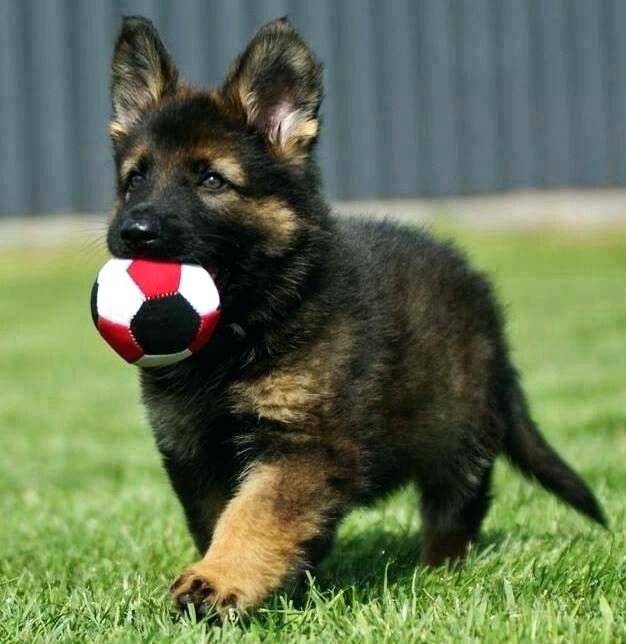
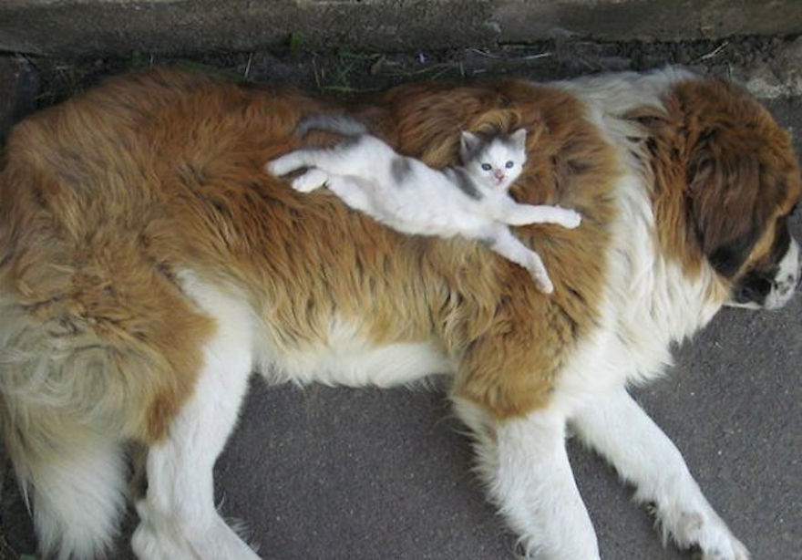

Dogs come in all shapes, sizes, colors, and breeds, and they are ALL beautiful. To fully understand CI/CD, you need to have a strong knowledgebase of a variety of doggos. Continue on FUR some basic training.

The above dog is a Golden Retriever floof. He is also a baby dog, called a puppy.
This dog is also a puppy. He is of the German Shepherd breed, named after the shepherds that used to travel in the northern regions of Germany.
That's actually made up; I don't know why they're called German Shepherds.
Like small humans, some puppies need stuffed friends to keep them company.
This is a very large dog lying underneath a very very tiny dog taking a nap on top of it. The very small dog is also known as a cat.
If you would like more information about dogs: